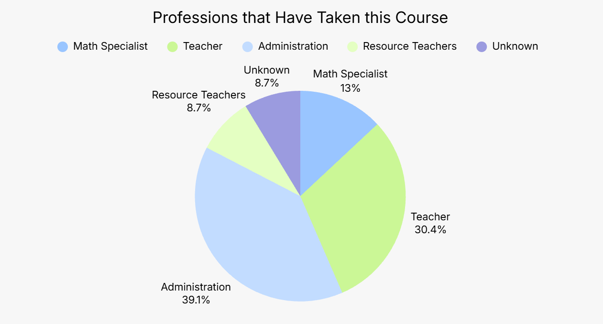
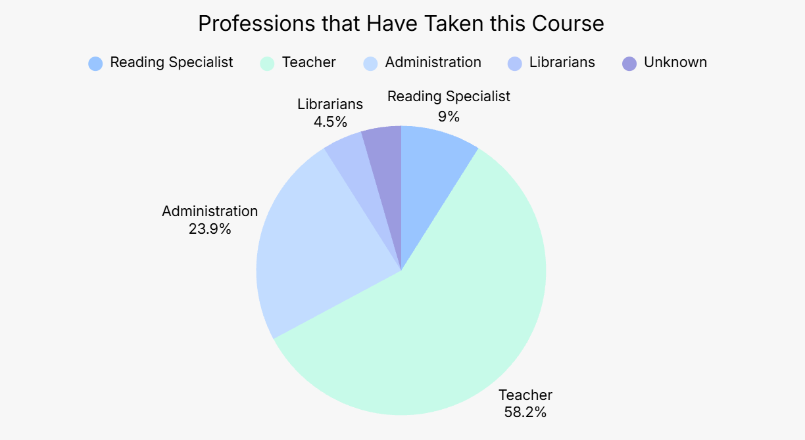

Transforming education data into clear, meaningful, and actionable information.
DATA ANALYSISVISUAL COMMUNICATIONEDUCATIONAL RESEARCH
THE WORK
Visualizing the data
Selected visualizations from the Quantile and LEDDI Canvas courses.
01

Quantile course participant demographics
02

LEDDI course participant demographics
BEHIND THE PROJECT
From information to insight.
Exploring how data visualization can make educational information
easier to understand and more useful for decision-making.
01VISUAL CONTEXT
Image Description
The images above display the pie charts I created for the Quantile
and LEDDI Canvas courses. Each chart illustrates the types of
educators who completed the respective course, with participants
categorized into five educator groups based on the course taken.
I also created charts for the Lexile course; however, we ultimately
decided not to include them because the data did not provide
meaningful insights for marketing purposes. I designed the
visualizations in Canva and incorporated the selected pie charts
into the one-page information sheets for the Quantile and LEDDI
courses. These visuals helped communicate the diversity of
educators participating in each course to prospective students
and administrators.
02PROJECT RATIONALE
Project Purpose
Following the development of the one-page information sheets for
the Lexile, LEDDI, and Quantile Canvas courses, I identified an
opportunity to incorporate visual data metrics to better
communicate the diversity of disciplines represented among
course participants. These visuals were intended to help
prospective students and administrators understand the range
of educational backgrounds and fields represented in each course.
To determine the most effective way to communicate this
information, I created and evaluated multiple graphs and tables,
selecting the visualizations with the strongest potential to
clearly and effectively highlight participant diversity. The
graphs featured above were ultimately incorporated into the
one-page information sheets.